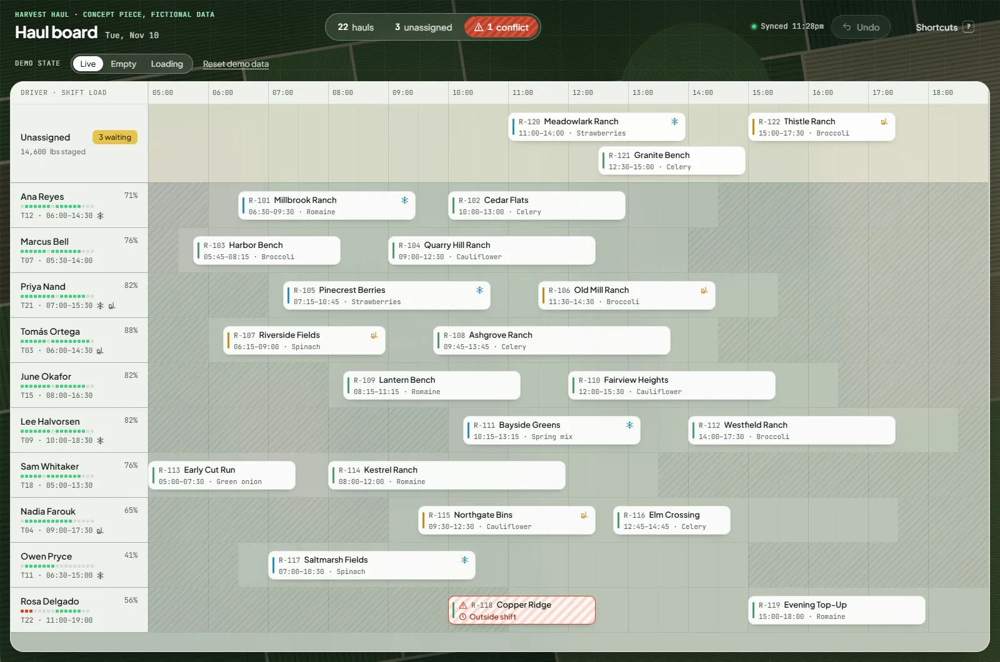
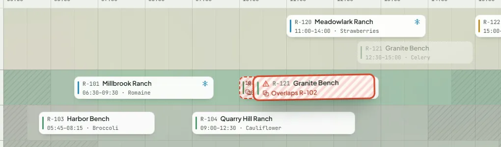
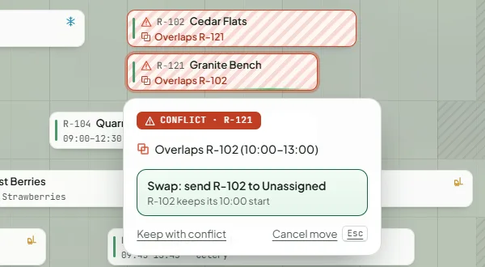
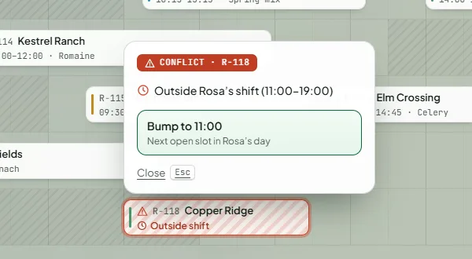
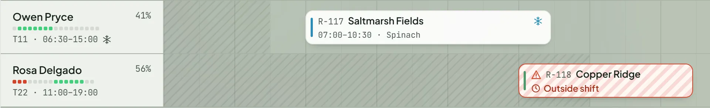
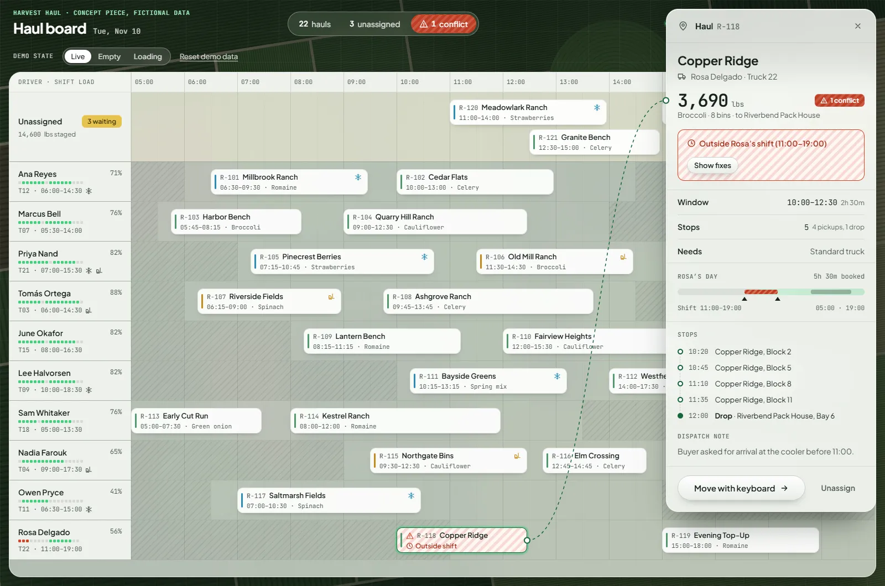
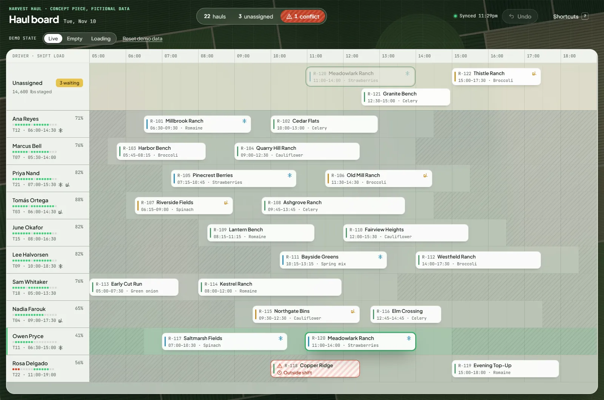
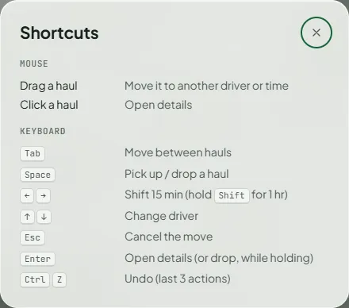

Haul Board Interaction design concept
A dispatch board that catches conflicts while you drag
Overview
Haul Board is a one-day board for assigning harvest pickups to a small pool of drivers and trucks. I built it as an interaction design exercise around one problem: catching a scheduling conflict while you’re still dragging, and offering a fix instead of an error. It’s a self-directed concept. There was no client, no user research and no backend, and all 10 drivers and 22 hauls are invented.

The problem
During harvest, a dispatcher matches pickups at ranch blocks with drivers and trucks and gets each load to a cooler. Every haul comes with rules.
It has to fit inside the driver’s shift, and it can’t overlap another haul. Some loads need particular equipment: a refrigerated trailer for strawberries, or a forklift where a block has no loading dock. The plan also changes during the day. A second pick comes in early, or a field runs late, so the board gets rearranged again and again, and any move can break a rule somewhere else.
A board that only checks when you save tells you about a problem after you’ve already made it. I wanted the board to say so while the haul is still in your hand.
I haven’t worked as a dispatcher and didn’t interview one. The rules are simplified to the shape of the problem, and the ranches, coolers and people are made up.
What if the board showed a conflict before you let go, and offered a specific fix instead of an error?
Checking during the drag
The checks run at every step of the drag, not after a save.
As you drag, the lane under the pointer lights up and a snap preview shows exactly where the haul will land, in 15-minute steps. If that spot breaks a rule, the preview and the lifted haul both switch to conflict styling, with the reason written on the haul.

A warning, not a wall
Letting go is still allowed. A dispatcher may know something the board doesn’t. Dropping into a conflict opens a small panel beside the haul with up to two fixes, ranked by how little they disturb the rest of the board.
Swap
If the haul overlaps exactly one other haul, the two trade places. The other haul keeps its start time.
Bump
Move the haul to the next open slot later in the same driver’s day, or the nearest earlier one if there isn’t one.
Hand it off
Give the haul to another driver who is on shift, free for the whole window and has the right truck.
If none of those works, the panel says so rather than offering something that doesn’t fit. You can also keep the conflict, and the haul stays flagged on the board until it’s fixed.


Conflicts never rely on color alone
There are three kinds of conflict: an overlap, a haul outside the driver’s shift, and a truck missing the equipment a load needs.
Each one is shown five ways at once: red, a diagonal hatch, a warning icon, an icon for its type (two overlapping squares, a clock or a truck) and a short label in words. Someone who can’t tell red from green still gets the full message. Each haul’s accessible name includes its conflicts in words, so a screen reader hears them too.

Capacity at a glance
Each driver’s label carries a strip of dots, one for every half hour of their shift: grey for free, green for booked, red for booked with a conflict. Beside it is the share of the shift that’s booked. You can see who has room before you pick anything up.

The details card stays tied to the board
Clicking a haul opens its details in a card at the side, and a dashed lead line runs from the haul to the card.
A side panel can leave you guessing which item it belongs to, especially after the board scrolls. The line keeps that answer on screen, and it follows the haul as the board and the card scroll. The card also shows the driver’s whole day as a bar with this haul marked, so you can see where it sits in the shift, along with its stops and the dispatch note.
The same move, from the keyboard
Drag-and-drop has a full keyboard alternative. It isn’t a lesser path: it uses the same preview and the same conflict checks as the mouse.
- Tab to a haul and press Space to pick it up. Left and right move it 15 minutes, or an hour with Shift. Up and down change the driver. Space or Enter drops it, and Escape puts it back.
- A screen reader hears each step: what was picked up, where it would land, and any conflict there.
- Ctrl+Z undoes the last three actions. A move and the fix that followed it count as one action, so one undo reverts both.
- Motion stays at 200 ms or less: a 120 ms lift, a 140 ms snap and a 200 ms settle. With reduced motion turned on, it all stops.

A field-ops look
Frosted-glass panels sit over an aerial farmland backdrop that’s drawn in code and seeded, so it’s the same on every visit. Every number is set in a mono font so times line up down the board. The glass is only used on large panels that don’t move, which keeps dragging smooth.

What I’d test with real people
Nobody but me has used this, and these are the questions I’d want answered first:
- Do dispatchers trust a ranked fix, or do they want to see every option?
- Does “Keep with conflict” get used so often that the flags stop meaning anything?
- Are three steps of undo enough on a busy morning?
- The fixes only know the hard rules. R-118’s note says the buyer wants it at the cooler before 11:00, but the board’s fix for it is a later start. Should notes like that become rules the board can check?